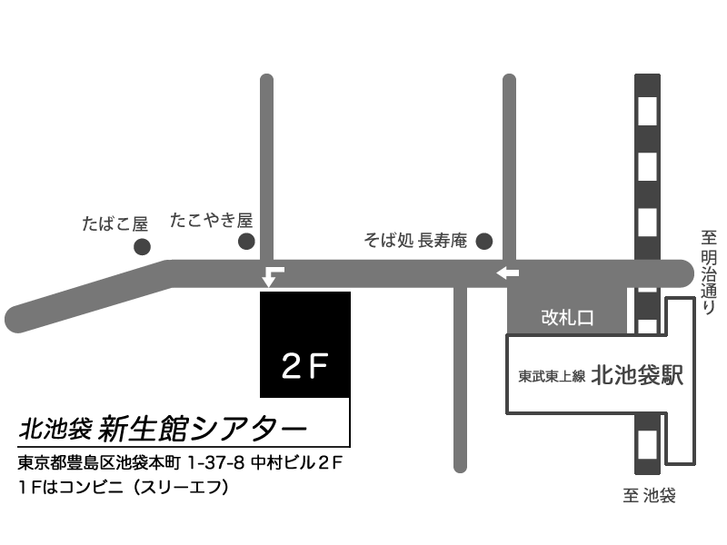

「名前のない演劇祭黄」に参加させていただきます！
演劇集団【でんげき】カニカマ支部は、3/17(金)~3/28(月)で行われる「名前のない演劇祭黄」に参加させて頂きます！
我々演劇集団【でんげき】カニカマ支部は、3/27(月)の第一部(15:00~16:00)にて、「劇団エドアブラ」様と公演を行います。
公演場所は、北池袋新生館シアター(東武東上線北池袋駅より徒歩1分)となっております。

また、「演劇集団【でんげき】」による公演も、「名前のない演劇祭黄」内で行われます。
演劇集団【でんげき】による公演の詳細はこちらから！
そちらもぜひご覧ください。
演目：「交番の落とし物」
脚本：空野カナタ
開場：15:30
開演：16:00
料金：一般￥2000
応援￥2500
高校生以下￥1500
リピーター￥500
公演時間は、でんげき及びエドアブラ様の合計で60分の予定です。
途中入れ替えはございません。ご注意ください。
予約はこちらから！
予約フォーム
ご質問等ございましたら、お気軽に演劇集団【でんげき】カニカマ支部のツイッターのDMにお寄せください。
カニカマ支部って？
カニカマ支部は、でんげきの部員の有志によって結成された演劇ユニットです。
カニカマよりもさらに濃いメンバーそろいのユニットです。
公演をお楽しみに！